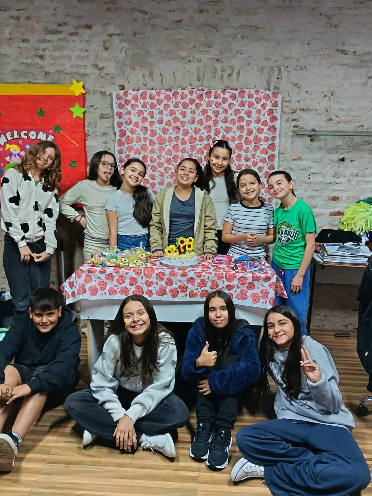
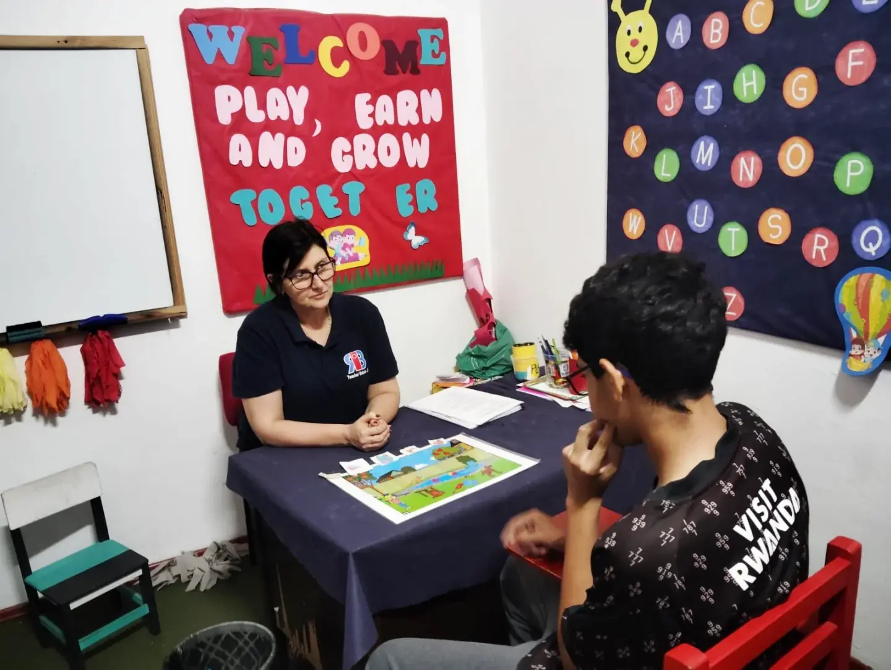

Desde los 4 años
Kids
Pre-A1 a A2
Los más chicos aprenden inglés jugando: canciones, cuentos, proyectos y rutinas de clase. La pronunciación se trabaja desde el primer día.
Consultar horarios de Kids
Hace 36 años que Rivera aprende inglés acá.
Chicos desde los 4 años, adolescentes y adultos, en grupos por edad y nivel. Dos sedes en Rivera.

Grupos armados por edad y nivel, con la misma teacher durante todo el año. Buscá la edad de tu hijo en la línea: ahí empieza su recorrido.
Desde los 4 años
Pre-A1 a A2
Los más chicos aprenden inglés jugando: canciones, cuentos, proyectos y rutinas de clase. La pronunciación se trabaja desde el primer día.
Consultar horarios de Kids
Adolescentes
A2 a B2
Un avance firme durante el liceo, con seguimiento por nivel y preparación gradual para el B2 First. Grupos de su misma edad, para que se animen a hablar.
Consultar horarios de Teens
Para rendir Cambridge
B2 First, C1 Advanced y C2 Proficiency
Preparación específica para los exámenes internacionales de Cambridge, con simulacros escritos y orales en condiciones reales de examen.
Consultar por la preparación
Para grandes

Adultos, de A1 a C2
Empezás desde cero o retomás donde lo dejaste. Horarios para quienes trabajan, cursos intensivos y clases virtuales.
Consultar horarios
Empresas, desde B1
Inglés para reuniones, presentaciones y correos de trabajo. En grupo, en tu empresa o con convenios para todo el equipo.
Pedir una propuesta
Todas las edades y niveles
Talleres de conversación e intensivos para ganar fluidez, como complemento de cualquier curso.
Consultar talleresDe Pre-A1 a C2, alineados con el Marco Común Europeo. Cada nivel cierra con un examen final del instituto, así siempre sabés dónde está tu hijo y qué sigue.
Kids va de Pre-A1 a A2: empieza a los 4 años.
4 añosacá empieza
Primeras palabrasSaluda, dice cómo se llama y sigue las consignas de clase.
PrincipianteSe presenta y habla de su familia con frases cortas.
ElementalCuenta lo que hizo y se arregla en situaciones de todos los días.
IntermedioDa su opinión, explica por qué y se defiende en un viaje.
Cambridgepreparación para los exámenes internacionales
Intermedio altoConversa con soltura, estudia y trabaja en inglés.
B2 FirstAvanzadoSe expresa con precisión en contextos académicos y profesionales.
C1 AdvancedMaestríaDomina el idioma casi como una persona nativa.
C2 ProficiencyEscribinos por WhatsApp, llamanos o pasá por cualquiera de las dos sedes. Te ayudamos a elegir curso, nivel y horario.

Casa Central
Joaquín Suárez 543
Cómo llegar a la Casa CentralSede Cuaró
Av. Cuaró 322
Cómo llegar a la Sede Cuaró